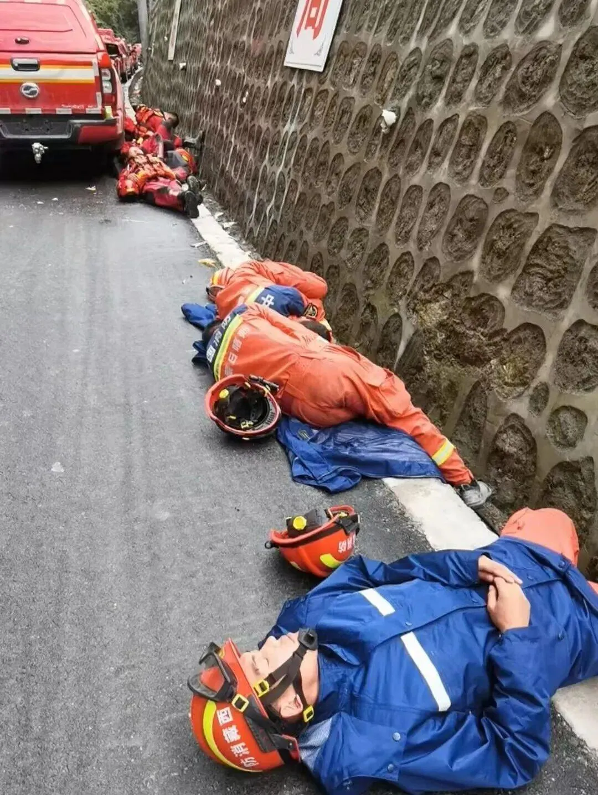

https://www.fmkorea.com/best/10303247501
허공 삽질이라면서 파묘당한 영상)
현재 중국측은 외신기자들을 죄다 막고 있음
외신들이 대놓고 중국이 우리 막아서 못 들어감하고 기사도 내놓고 있음
그래서 외신 기자들은 네팔쪽에서만 취재를 하고 있고 중국측에서 취재하는건 중국 언론들뿐임
중국 관영매체나 중국 언론에서 나오는 대부분의 영상들은 재난 구호 영상이라기보다는
우리 인민군이 이만큼 영웅이다
구조팀이 이만큼이나 애국심이 강하다
우리 중국의 기술이 이만큼 뛰어나다
우리 중국 구호팀이 이렇게 고생한다
이런게 대부분임
그래서 외국 네티즌들한테 계속 파묘당하는 중
저 영상뿐만 아니라 수십시간 진흙밭에서 구조활동하고 지쳐서 쓰러졌다는 구조팀의 옷이 다 깨끗하다거나

장비 놔두고 맨손으로 파헤치는 장면들을 찍거나
그런데 누가봐도 방금 새장갑 끼고 파해치는게 티가 날정도로 장갑이 깨끗함
이외에도 계속 파묘되는데 보면 볼수록 기괴하긴 함
해외 온라인에서 네팔쪽 구조활동하고 비교되는 중임
막짤 벽 왤캐 징그럽게 생겻냐 저기서 외계인나올것같네